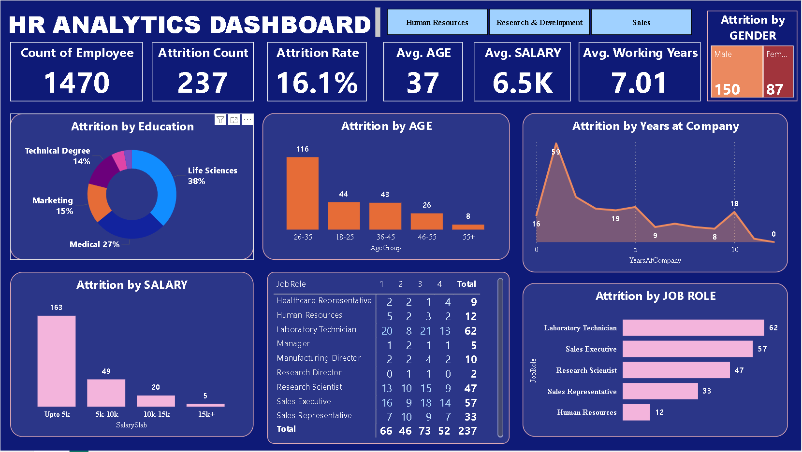

HR Analytics Dashboard: Employee Attrition Analysis
This project focused on analyzing employee attrition trends and providing actionable insights to help organizations improve employee retention. Using Power BI on a dataset of 1,470 employees, I identified key risk factors and delivered data-driven retention strategies.

Click 'Watch Interactive Demo' below for a live walkthrough.
Executive Summary & Key Findings
- Attrition Rate:Established a company-wide turnover rate of 16.1%.
- Critical Age Group: Attrition is highest among 26–35 year-olds (116 employees), indicating major churn in the early-to-mid career phase.
- Compensation Risk: The "Up to 5k" salary slab contributed the highest number of departures (163 attritions), highlighting compensation as a primary retention issue.
- High-Risk Roles: Critical roles most impacted were Laboratory Technicians (62), Sales Executives (57), and Research Scientists (47).
Interactive Features and UX
The dashboard was designed for self-service analysis, allowing HR stakeholders to drill down into data quickly and intuitively.
- Cross-Filtering: All visuals and KPI cards dynamically update when a user selects a segment.
- Slicers:Includes interactive filters for **Department, Education, Age Band, Salary Slab, and Job Role.
- Real-time Metrics: KPI cards (Attrition Rate, Avg. Salary) recalculate in real-time based on filter selection.
Core Metrics (KPIs)
| Metric | Value | Note |
|---|
| Total Employees | 1,470 | Dataset size |
| Attrition Count | 237 | Total number of departures |
| Attrition Rate | 16.1% | Key Measure of Turnover |
| Average Age | 37 years | |
| Average Salary | $6.5K | |
| Average Working Years | 7.01 years | Average Tenure |
Actionable Recommendations
Recommendations were delivered to mitigate the identified risks:
- Targeted Compensation Review: Immediate salary adjustments for the slab to address the primary driver of attrition.
- Enhanced Career Development: Launch a mentorship and clear pathing program for the 26–35 age group.
- Role-Specific Retention: Implement stay interviews and tailored incentive packages for high-risk roles (Lab Techs, Sales).
© [Your Name/Year]. Powered by Power BI, DAX, and Data Storytelling.